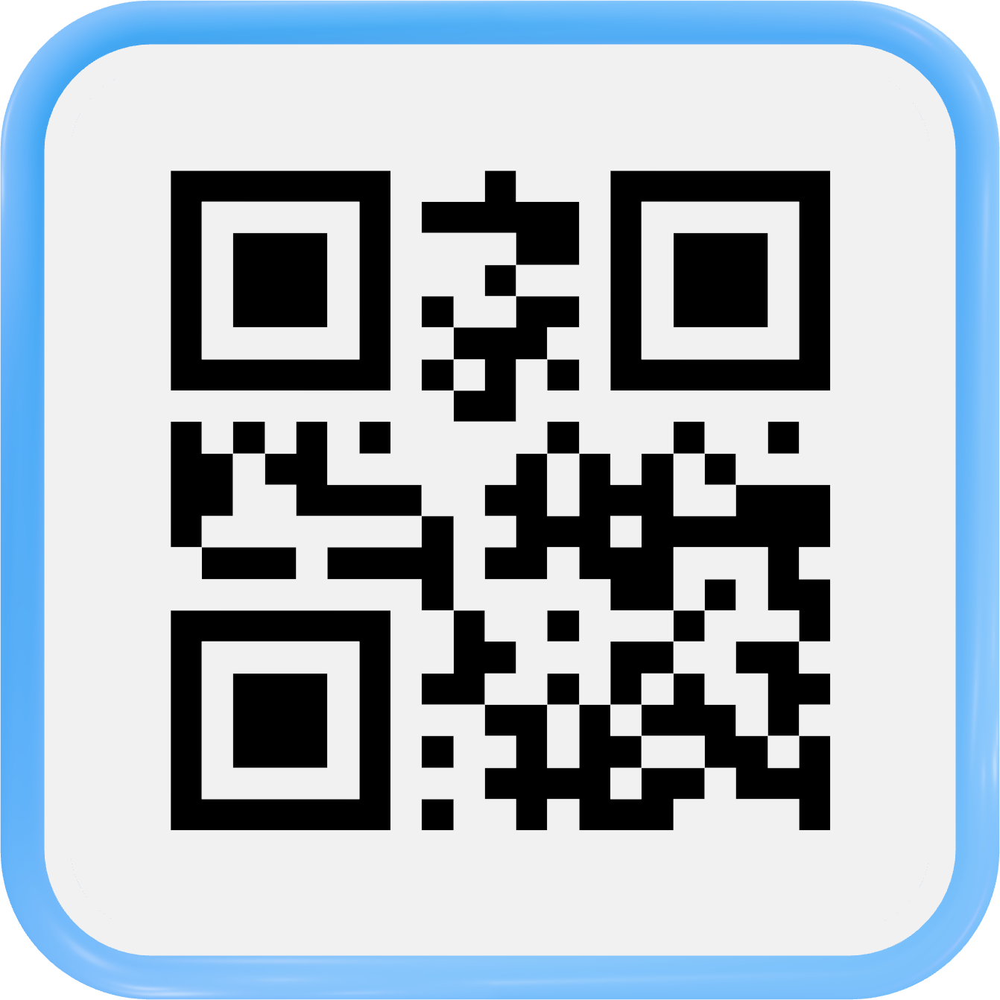

Look.
Nod.
Done.
A protocol for AI glasses. Look at a code, hear what it is and what it costs, and nod to confirm.
Junction 2026 · Meta challenge: AI Glasses for Everyone, EverydayAn independent project. Not a product of Meta.
